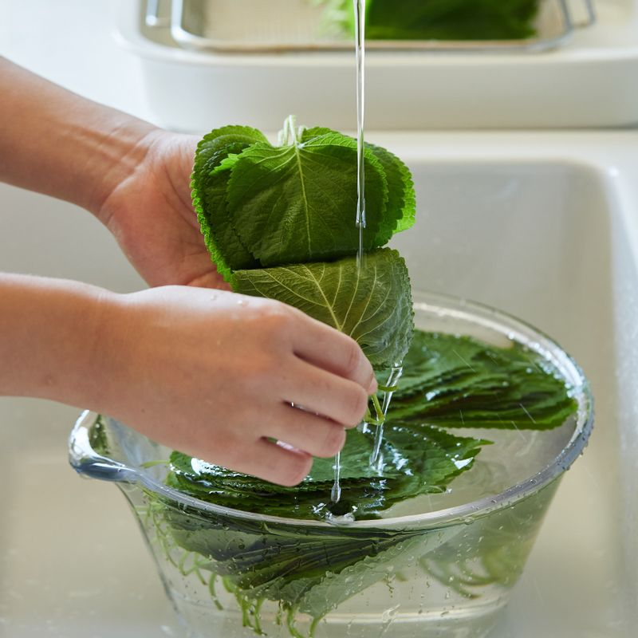
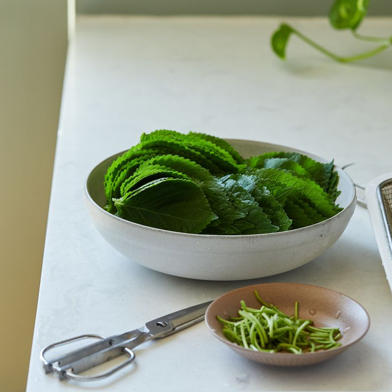
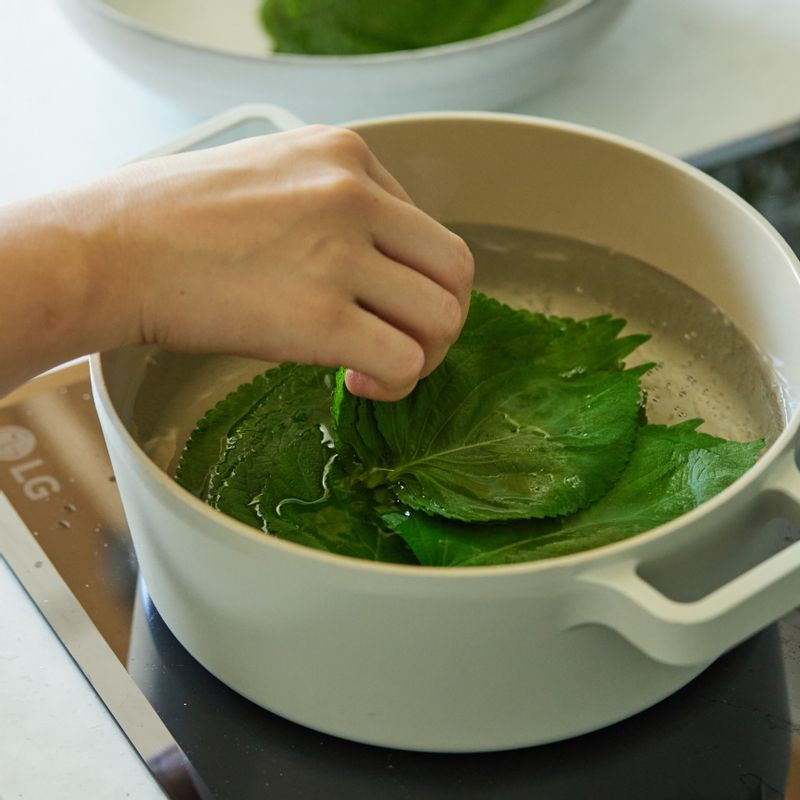
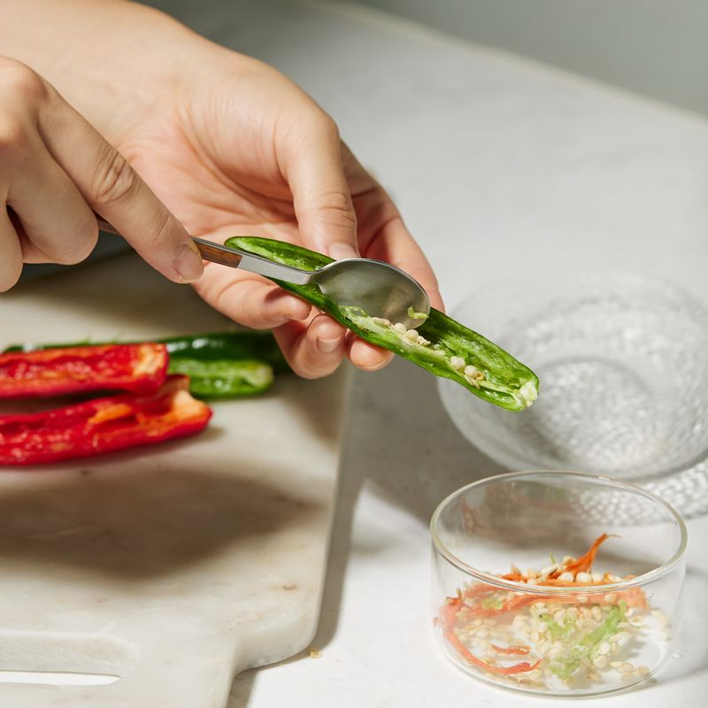
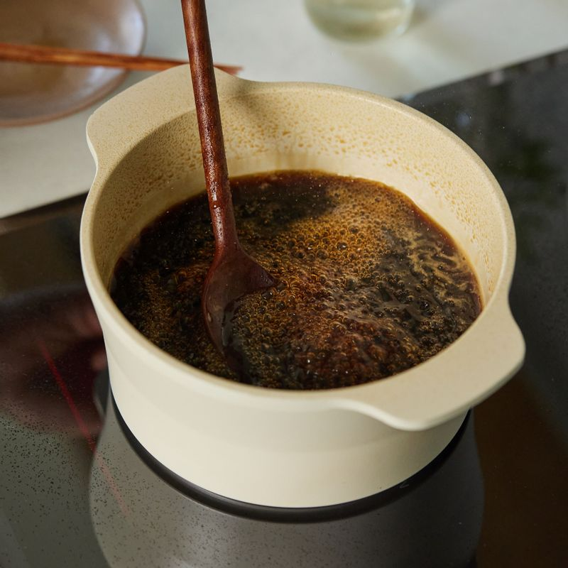
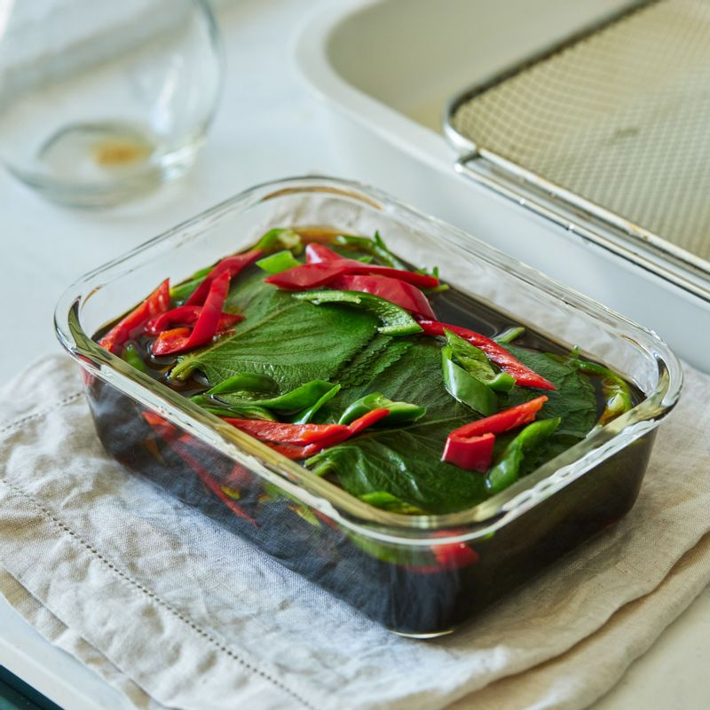

-

소금 1작은술을 물에 녹인 후 깻잎을 넣고 2~3분 두었다가 흐르는 물에 깨끗이 씻어주세요.
-

물기를 제거한 깻잎은 꼭지 부분을 가위로 정리해 주세요.
(tip. 깻잎 꼭지는 1cm정도 남기는 것이 좋아요)
-

끓는 물에 소금 1꼬집을 넣고 깻잎을 3~40초 정도 데쳐주세요. 데친 깻잎은 채반에서 열기를 식혀주세요.
(tip. 깻잎이 흐트러지지 않도록 한 묶음씩 나눠 데쳐주세요)
-

고추는 꼭지를 떼고 길게 반으로 갈라 씨를 제거하고 어슷하게 썰어주세요.
(tip. 고추씨를 제거하면 장아찌 국물이 지저분해지지 않아요)
-

냄비에 간장 물 재료를 넣고 끓여주세요. 간장물이 끓어오르기 시작하면 바로 불을 끄고 다시마는 건져내고 식초를 넣고 잘 저어주세요.
(tip. 완성된 간장물은 미지근하게 식혀 주세요)
-

밀폐 용기에 데친 깻잎과 고추를 담고 식힌 양념장을 부어주세요. 깻잎이 양념에 잠기도록 무거운 접시나 돌로 누른 후 뚜껑을 덮어 반나절 정도 숙성 시켜주세요.
-
완성된 깻잎 장아찌를 밥과 함께 맛있게 즐겨주세요.